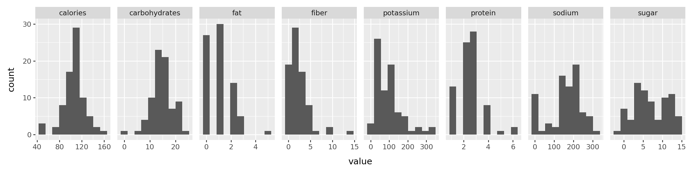
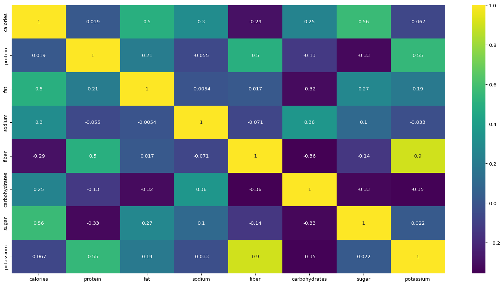
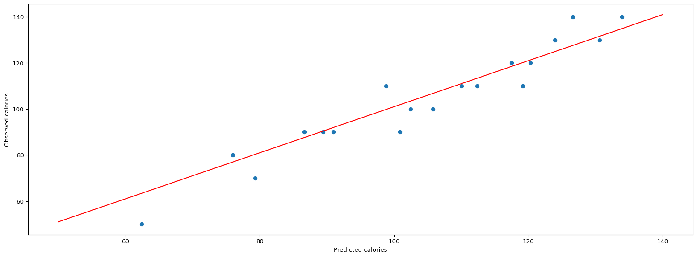
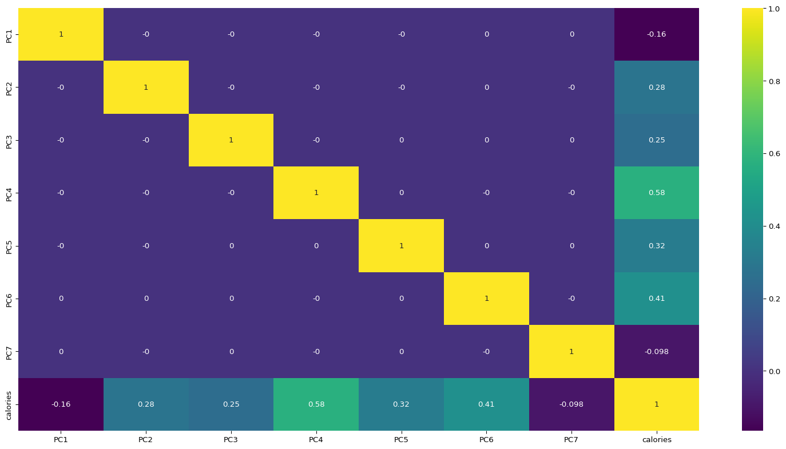

Predicting calories cereals based on the nutritional contents
AI
analysis
python
Author
Aditya Ranade
Published
February 13, 2025
Cereals are commonly consumed for breakfast. But how good are they in terms of the nutritional value? Can we predict the calories based on the nutritional contents ?
I found this dataset on Kaggle which gives the nutritional information about their cereals. First, we look at the exploratory data analysis and later try some simple regression models. First let us access and process the data through python
# Load Librariesimport pandas as pd # data processing, CSV file I/O (e.g. pd.read_csv)from plotnine import*import numpy as np # linear algebra# import statsmodels.api as smimport statsmodels.formula.api as smfimport matplotlib.pyplot as pltimport seaborn as snsimport randomfrom scipy.stats import pearsonr# Get data from github repopath ="https://raw.githubusercontent.com//adityaranade//portfolio//refs//heads//main//cereals//cereal.csv"df0=pd.read_csv(path, encoding='unicode_escape')df0.head()
name
mfr
type
calories
protein
fat
sodium
fiber
carbo
sugars
potass
vitamins
shelf
weight
cups
rating
0
100% Bran
N
C
70
4
1
130
10.0
5.0
6
280
25
3
1.0
0.33
68.402973
1
100% Natural Bran
Q
C
120
3
5
15
2.0
8.0
8
135
0
3
1.0
1.00
33.983679
2
All-Bran
K
C
70
4
1
260
9.0
7.0
5
320
25
3
1.0
0.33
59.425505
3
All-Bran with Extra Fiber
K
C
50
4
0
140
14.0
8.0
0
330
25
3
1.0
0.50
93.704912
4
Almond Delight
R
C
110
2
2
200
1.0
14.0
8
-1
25
3
1.0
0.75
34.384843
# modify the column namesdf0.columns = ['name', 'manufacturer','type','calories','protein','fat','sodium','fiber','carbohydrates','sugar','potassium','vitamins','shelf','weight','cups', 'rating']df0.head()
name
manufacturer
type
calories
protein
fat
sodium
fiber
carbohydrates
sugar
potassium
vitamins
shelf
weight
cups
rating
0
100% Bran
N
C
70
4
1
130
10.0
5.0
6
280
25
3
1.0
0.33
68.402973
1
100% Natural Bran
Q
C
120
3
5
15
2.0
8.0
8
135
0
3
1.0
1.00
33.983679
2
All-Bran
K
C
70
4
1
260
9.0
7.0
5
320
25
3
1.0
0.33
59.425505
3
All-Bran with Extra Fiber
K
C
50
4
0
140
14.0
8.0
0
330
25
3
1.0
0.50
93.704912
4
Almond Delight
R
C
110
2
2
200
1.0
14.0
8
-1
25
3
1.0
0.75
34.384843
# select data for the histogramdf = df0[["calories", "protein", "fat", "sodium", "fiber", "carbohydrates", "sugar","potassium","name"]]df.head()# Use melt function for the histograms of variables df2 = pd.melt(df, id_vars=['name'])# df2.head()
Now that we have the data ready, let us look at the histogram of each variables namely nutritional contents, specifically calories, protein, fat, sodium, fiber, carbo, sugars and potassium
p = ( ggplot(df2, aes("value"))+ geom_histogram(bins=10)+ facet_grid(". ~ variable", scales='free_x')+ theme(figure_size=(12, 3)) )# If we want the density on y axis# p = (# ggplot(df2, aes("value", after_stat("density")))# + geom_histogram(bins=10)# + facet_grid(". ~ variable", scales='free_x')# + theme(figure_size=(12, 3))# )p.show()

The histogram of each of the variables do not show any problems as all the plots look decent. We will look at the correlation plot.
# Check the correlation between the variablesplt.figure(figsize=(20,10))sns.heatmap(df.iloc[:,:-1].corr(),annot=True,cmap="viridis")plt.show()

Calories variable has significant positive correlation with all the variables except fiber and potassium. This seems logical and will be useful when we build a regression model for the same. Next we take a look at the pairs plot which will give us idea about relationship between each pair of variables. Most important from the point of prediction is the first row where calories is the y axis and each of the variable is x axis.
The scatterplots of each variable with calories which can be seen in the upper triangular plots in the very first row. It seems there is a linear association between calories and fat, carbs and protein. However, it does not seem to have a linear association with fiber.
# Split data into train and test setindices =range(len(df)) # Create a list of indices# Get 75% random indicesrandom.seed(23) # for reproducible examplerandom_indices = random.sample(indices, round(0.75*len(df)))# Training datasetdata_train = df.iloc[random_indices,:-1]# Testing datasetdata_test = df.iloc[df.index.difference(random_indices),:-1]# Build a multiple linear regression model to predict calories using other variables using training dataresult = smf.ols("calories ~ protein + fat + sodium + fiber + carbohydrates + sugar + potassium", data = data_train).fit()# check the summaryresult.summary()
OLS Regression Results
Dep. Variable:
calories
R-squared:
0.783
Model:
OLS
Adj. R-squared:
0.753
Method:
Least Squares
F-statistic:
25.78
Date:
Sun, 03 Aug 2025
Prob (F-statistic):
1.59e-14
Time:
20:33:23
Log-Likelihood:
-205.34
No. Observations:
58
AIC:
426.7
Df Residuals:
50
BIC:
443.2
Df Model:
7
Covariance Type:
nonrobust
coef
std err
t
P>|t|
[0.025
0.975]
Intercept
27.1211
8.231
3.295
0.002
10.588
43.654
protein
5.8767
1.433
4.102
0.000
2.999
8.754
fat
8.7752
1.482
5.920
0.000
5.798
11.753
sodium
0.0062
0.016
0.381
0.705
-0.026
0.039
fiber
0.1062
1.480
0.072
0.943
-2.866
3.078
carbohydrates
2.5884
0.380
6.811
0.000
1.825
3.352
sugar
3.1356
0.365
8.587
0.000
2.402
3.869
potassium
-0.0489
0.052
-0.937
0.353
-0.154
0.056
Omnibus:
29.387
Durbin-Watson:
2.071
Prob(Omnibus):
0.000
Jarque-Bera (JB):
80.990
Skew:
1.410
Prob(JB):
2.59e-18
Kurtosis:
8.055
Cond. No.
1.39e+03
Notes: [1] Standard Errors assume that the covariance matrix of the errors is correctly specified. [2] The condition number is large, 1.39e+03. This might indicate that there are strong multicollinearity or other numerical problems.
p-value for sodium, fiber and potassium is considerably high and hence these variables do not add help predict the calories. This might be due to multicollinearity (the predictor variables are have high correlation within themselves). If we look at the correlation plot, fiber and potassium has 0.9 correlation which is high. One way to tackle multicollinearity is to consider principal component analysis (PCA). We will look at it in a while but let us first try to make predictions and look at the evaluation metrics.
Now let us make prediction on the testing data and plot the observed vs. predicted plot
# Make predictions using testing datapredictions = result.predict(data_test)# Observed vs. Predicted plotplt.figure(figsize=(20,7))plt.scatter(predictions, data_test["calories"])plt.ylabel("Observed calories")plt.xlabel("Predicted calories")# Create the ablinex_line = np.linspace(min(data_test["calories"]), max(data_test["calories"]), 100)y_line =1* x_line +1plt.plot(x_line, y_line, color='red')plt.show()

The observed vs. predicted looks good. However there is low number of data points and hence we should take this with a grain of salt. Let us check some evaluation metrics like the Root Mean Squared Error (RMSE) and Mean Absolute Error (MAE).
from sklearn.metrics import mean_absolute_error,mean_squared_errorprint("Mean Absolute Error:",round(mean_absolute_error(data_test["calories"],predictions),2))print("Root Mean Squared Error:",round((mean_squared_error(data_test["calories"],predictions))**0.5,2))
Mean Absolute Error: 5.34
Root Mean Squared Error: 6.89
Root Mean Squared Error (RMSE) of 5.34 and Mean Absolute Error (MAE) of 6.89 is decent and indicates model is performing fairly well.
Now, we will run regression model based on principal component analysis since it helps with multicollinearity.
# Principal component analysisfrom sklearn.decomposition import PCA# separate the x and y variable for the training data firsty_train = data_train.iloc[:,:1]X0_train = data_train.iloc[:,1:]# Standardize the predictor data firstfrom sklearn.preprocessing import StandardScalersc = StandardScaler()# training dataX_train_scaled = sc.fit_transform(X0_train)# Now calculate the principal componentsfrom sklearn.decomposition import PCApca = PCA()principalComponents = pca.fit_transform(X_train_scaled)# Training dataX_train_pca = pd.DataFrame(data = principalComponents, columns=['PC{}'.format(i+1)for i inrange(principalComponents.shape[1])])explained_variance = pca.explained_variance_ratio_explained_variance
The first six principal components explain around 99% of the data, so we will use the first 6 principal components to build a regression model.
X_train_pca = pd.DataFrame(data = principalComponents, columns=['PC{}'.format(i+1)for i inrange(principalComponents.shape[1])])# combine the X and Y for the training datadata_train_pca = X_train_pcadata_train_pca.set_index(X0_train.index,inplace =True)data_train_pca['calories'] = y_traindata_train_pca.head()
PC1
PC2
PC3
PC4
PC5
PC6
PC7
calories
37
-1.860753
0.565043
0.525620
-0.850117
-0.237526
0.005600
0.155876
110
10
-1.341762
1.558699
0.886958
0.766110
-0.195248
-0.671615
-0.098032
120
2
4.512654
-0.609249
2.068686
-0.856303
-0.653496
-0.585533
0.433959
70
39
-0.253116
-0.667314
0.281191
0.402756
0.867213
0.766825
-0.165899
140
54
-1.338187
-0.005653
-2.407667
-1.446089
-0.053030
-1.193701
0.316424
50
# Correlation plot for principal componentsplt.figure(figsize=(20,10))sns.heatmap(data_train_pca.corr().round(4),annot=True, cmap="viridis")plt.show()

We can observe that only calories variable has correlation with the principal components and the correlation between the principal components is practically 0. So we will use the principal components to build a regression model.
# Now run the OLS regression model on the first five principal components# Fit the OLS regressionresult_pca = smf.ols("calories ~ PC1 + PC2 + PC3 + PC4 + PC5 + PC6", data = data_train_pca).fit()# check the summaryresult_pca.summary()
OLS Regression Results
Dep. Variable:
calories
R-squared:
0.774
Model:
OLS
Adj. R-squared:
0.747
Method:
Least Squares
F-statistic:
29.03
Date:
Sun, 03 Aug 2025
Prob (F-statistic):
7.97e-15
Time:
20:33:24
Log-Likelihood:
-206.59
No. Observations:
58
AIC:
427.2
Df Residuals:
51
BIC:
441.6
Df Model:
6
Covariance Type:
nonrobust
coef
std err
t
P>|t|
[0.025
0.975]
Intercept
107.7586
1.194
90.277
0.000
105.362
110.155
PC1
-1.8336
0.741
-2.475
0.017
-3.321
-0.346
PC2
3.8950
0.919
4.240
0.000
2.051
5.739
PC3
4.3355
1.176
3.686
0.001
1.974
6.697
PC4
10.9172
1.261
8.654
0.000
8.385
13.450
PC5
9.0880
1.897
4.791
0.000
5.279
12.896
PC6
12.7554
2.052
6.217
0.000
8.636
16.875
Omnibus:
21.542
Durbin-Watson:
2.118
Prob(Omnibus):
0.000
Jarque-Bera (JB):
44.731
Skew:
1.104
Prob(JB):
1.94e-10
Kurtosis:
6.692
Cond. No.
2.77
Notes: [1] Standard Errors assume that the covariance matrix of the errors is correctly specified.
\(R^{2}\) is 77.4% which is decent and all the predictor variables have a low p-value value. We make predictions using the test data and then plot the out of sample observed vs. predicted. First we calculate the principal components of the testing data and then make the predictions.
# X for testing dataX0_test = data_test.iloc[:,1:]# scaled test dataX_test_scaled = sc.transform(X0_test)# calculate the principal components for the testing dataX_test = pca.transform(X_test_scaled)X_test_pca = pd.DataFrame(data = X_test, columns=['PC{}'.format(i+1)for i inrange(X_test.shape[1])])# calculate the predictionspredictions_pca = result_pca.predict(X_test_pca)
Now we plot the out of sample predictions obtained from regression model using raw data as well as the predictions obtained from model using the first six principal components on the same plot with different colors.
The out of sample observed vs. predicted plot looks decent with all the points just around the red line. WE look at the evaluation metrics for the model built using the principal components.
from sklearn.metrics import mean_absolute_error,mean_squared_errorprint("Mean Absolute Error:",round(mean_absolute_error(data_test["calories"],predictions_pca),2))print("Root Mean Squared Error:",round((mean_squared_error(data_test["calories"],predictions_pca))**0.5,2))
Mean Absolute Error: 4.66
Root Mean Squared Error: 6.11
For the regression model using first six principal components, Root Mean Squared Error (RMSE) is 4.66 and Mean Absolute Error (MAE) is 6.11 which is an improvement from the regression model using the raw data.